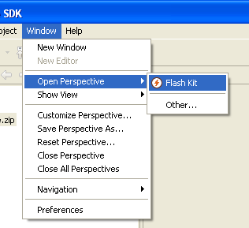
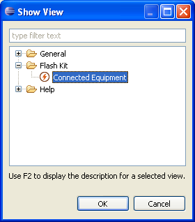

The Connected Equipment view is part of the Flash Kit perspective. To open the perspective choose "Open perspective" from the "Windows" menu and select "Flash Kit".
The Connected Equipment view can also be made visible in any other perspective by choosing "Show view" from the "Windows" menu, browse to the Flash Kit node in the shown dialog and selecting Connected Equipment. The view can be placed at any location in the perspective.
Read more about the Connected Equipment view in Connected Equipment Overview.
Flash Kit preferences can be accessed by selecting "Preferences" in the "Windows" menu and then locate "Flash Kit" in the tree of preference nodes.
Read more about the different available preferences in Preference Overview.